Thirty-nine men have held forty numbered presidencies from George Washington to Thomas Harwood. The historical succession remains unchanged through Franklin D. Roosevelt's first three terms; the decisive break comes with the 1944 Roosevelt–Byrnes ticket and Byrnes's accession in 1945.
Numbering and terms
Presidents are numbered by uninterrupted periods in office. Grover Cleveland's nonconsecutive terms remain the 22nd and 24th presidencies, making Ronald Reagan the 39th president in this setting. Election years are shown even when a president instead entered office through succession or a contingent election in the House of Representatives.
Party-color convention
National Renewal's de facto identifying color is cyan during its rise under Lindbergh and Rockwell. When Democrats and Republicans unify in 1972, the reorganized two-party environment shifts National Renewal's public color to blue. Buchanan's presidential entries therefore use blue; cyan remains visible here as the party's pre-fusion historical identity.
Presidents
| No. | Portrait | President | Term | Party | Election or accession | Vice president |
|---|---|---|---|---|---|---|
| 1 |  | George Washington1732–1799 | 30 Apr. 1789 – 4 Mar. 1797 | Unaffiliated | 1788–89 · 1792 | John Adams |
| 2 |  | John Adams1735–1826 | 4 Mar. 1797 – 4 Mar. 1801 | Federalist | 1796 | Thomas Jefferson |
| 3 | 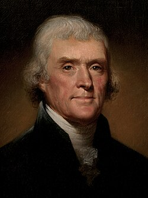 | Thomas Jefferson1743–1826 | 4 Mar. 1801 – 4 Mar. 1809 | Democratic-Republican | 1800 · 1804 | Aaron Burr George Clinton |
| 4 |  | James Madison1751–1836 | 4 Mar. 1809 – 4 Mar. 1817 | Democratic-Republican | 1808 · 1812 | George Clinton Elbridge Gerry Vacancies after both deaths |
| 5 | 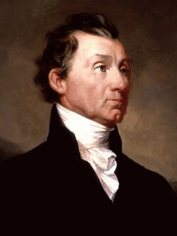 | James Monroe1758–1831 | 4 Mar. 1817 – 4 Mar. 1825 | Democratic-Republican | 1816 · 1820 | Daniel D. Tompkins |
| 6 |  | John Quincy Adams1767–1848 | 4 Mar. 1825 – 4 Mar. 1829 | Democratic-Republican National Republican | 1824 · House | John C. Calhoun |
| 7 |  | Andrew Jackson1767–1845 | 4 Mar. 1829 – 4 Mar. 1837 | Democratic | 1828 · 1832 | John C. Calhoun Martin Van Buren |
| 8 |  | Martin Van Buren1782–1862 | 4 Mar. 1837 – 4 Mar. 1841 | Democratic | 1836 | Richard Mentor Johnson |
| 9 | 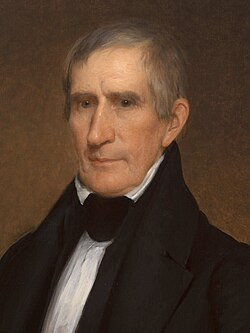 | William Henry Harrison1773–1841 | 4 Mar. 1841 – 4 Apr. 1841 | Whig | 1840 | John Tyler |
| 10 | 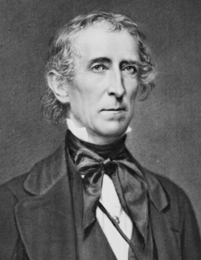 | John Tyler1790–1862 | 4 Apr. 1841 – 4 Mar. 1845 | Whig Unaffiliated | Succession | Vacant |
| 11 | 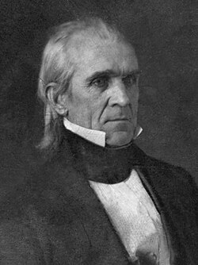 | James K. Polk1795–1849 | 4 Mar. 1845 – 4 Mar. 1849 | Democratic | 1844 | George M. Dallas |
| 12 | 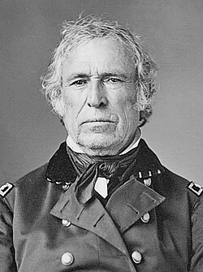 | Zachary Taylor1784–1850 | 4 Mar. 1849 – 9 July 1850 | Whig | 1848 | Millard Fillmore |
| 13 | 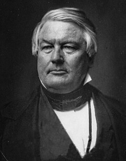 | Millard Fillmore1800–1874 | 9 July 1850 – 4 Mar. 1853 | Whig | Succession | Vacant |
| 14 | 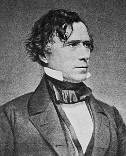 | Franklin Pierce1804–1869 | 4 Mar. 1853 – 4 Mar. 1857 | Democratic | 1852 | William R. King Vacant after 18 Apr. 1853 |
| 15 | 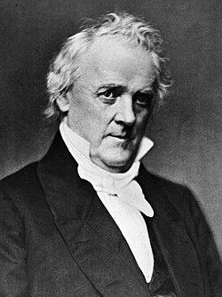 | James Buchanan1791–1868 | 4 Mar. 1857 – 4 Mar. 1861 | Democratic | 1856 | John C. Breckinridge |
| 16 | 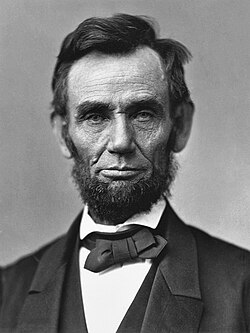 | Abraham Lincoln1809–1865 | 4 Mar. 1861 – 15 Apr. 1865 | Republican National Union | 1860 · 1864 | Hannibal Hamlin Andrew Johnson |
| 17 | 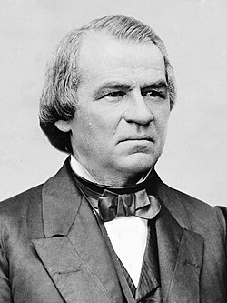 | Andrew Johnson1808–1875 | 15 Apr. 1865 – 4 Mar. 1869 | National Union Democratic | Succession | Vacant |
| 18 | 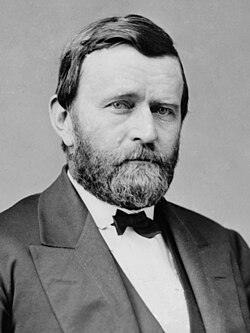 | Ulysses S. Grant1822–1885 | 4 Mar. 1869 – 4 Mar. 1877 | Republican | 1868 · 1872 | Schuyler Colfax Henry Wilson Vacant after 22 Nov. 1875 |
| 19 | 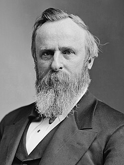 | Rutherford B. Hayes1822–1893 | 4 Mar. 1877 – 4 Mar. 1881 | Republican | 1876 | William A. Wheeler |
| 20 | 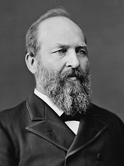 | James A. Garfield1831–1881 | 4 Mar. 1881 – 19 Sept. 1881 | Republican | 1880 | Chester A. Arthur |
| 21 | 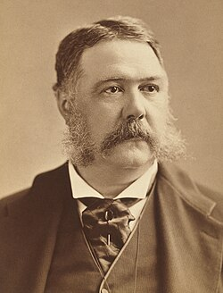 | Chester A. Arthur1829–1886 | 19 Sept. 1881 – 4 Mar. 1885 | Republican | Succession | Vacant |
| 22 | 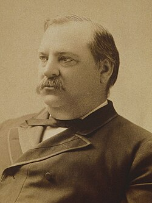 | Grover Cleveland1837–1908 · first presidency | 4 Mar. 1885 – 4 Mar. 1889 | Democratic | 1884 | Thomas A. Hendricks Vacant after 25 Nov. 1885 |
| 23 | 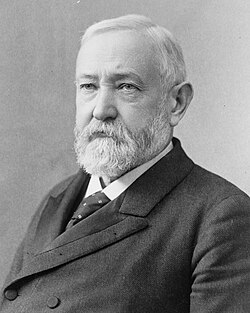 | Benjamin Harrison1833–1901 | 4 Mar. 1889 – 4 Mar. 1893 | Republican | 1888 | Levi P. Morton |
| 24 | Grover Cleveland1837–1908 · second presidency | 4 Mar. 1893 – 4 Mar. 1897 | Democratic | 1892 | Adlai Stevenson I | |
| 25 | 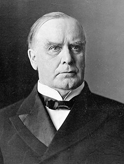 | William McKinley1843–1901 | 4 Mar. 1897 – 14 Sept. 1901 | Republican | 1896 · 1900 | Garret Hobart Theodore Roosevelt |
| 26 | 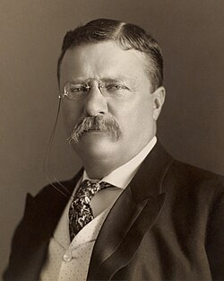 | Theodore Roosevelt1858–1919 | 14 Sept. 1901 – 4 Mar. 1909 | Republican | Succession · 1904 | Vacant to 1905 Charles W. Fairbanks |
| 27 | 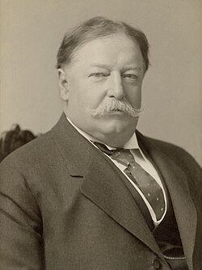 | William Howard Taft1857–1930 | 4 Mar. 1909 – 4 Mar. 1913 | Republican | 1908 | James S. Sherman Vacant after 30 Oct. 1912 |
| 28 | 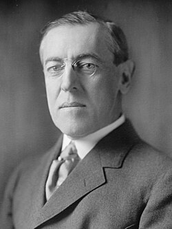 | Woodrow Wilson1856–1924 | 4 Mar. 1913 – 4 Mar. 1921 | Democratic | 1912 · 1916 | Thomas R. Marshall |
| 29 | 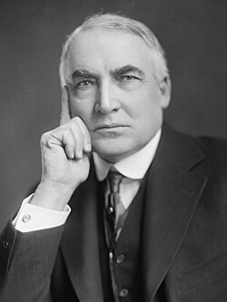 | Warren G. Harding1865–1923 | 4 Mar. 1921 – 2 Aug. 1923 | Republican | 1920 | Calvin Coolidge |
| 30 | 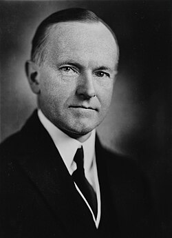 | Calvin Coolidge1872–1933 | 2 Aug. 1923 – 4 Mar. 1929 | Republican | Succession · 1924 | Vacant to 1925 Charles G. Dawes |
| 31 | 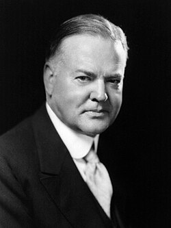 | Herbert Hoover1874–1964 | 4 Mar. 1929 – 4 Mar. 1933 | Republican | 1928 | Charles Curtis |
| 32 | 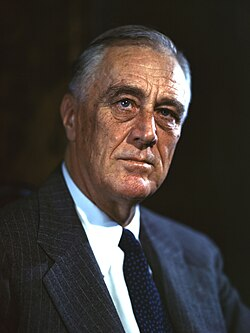 | Franklin D. Roosevelt1882–1945 | 4 Mar. 1933 – 12 Apr. 1945 | Democratic | 1932 · 1936 · 1940 1944 · divergence ticket | John Nance Garner Henry A. Wallace James F. Byrnes |
| 33 | 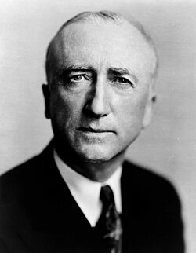 | James F. Byrnes1882–1972 | 12 Apr. 1945 – 20 Jan. 1949 | Democratic Recovery Democrat | Succession | Vacant |
| 34 | Thomas E. Dewey1902–1971 | 20 Jan. 1949 – 20 Jan. 1957 | Republican | 1948 · 1952 | Earl Warren | |
| 35 | 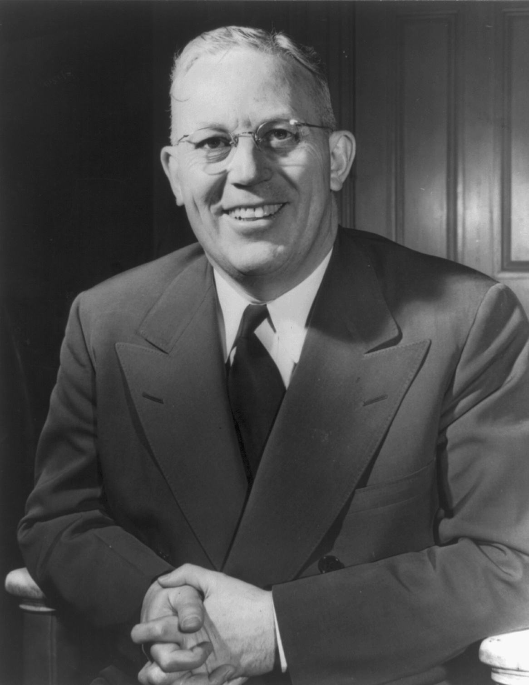 | Earl Warren1891–1974 | 20 Jan. 1957 – 20 Jan. 1961 | Republican | 1956 · House | Name open |
| 36 | 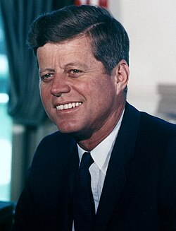 | John F. Kennedyborn 1917 | 20 Jan. 1961 – 20 Jan. 1969 | Democratic | 1960 · 1964 | Name open |
| 37 | 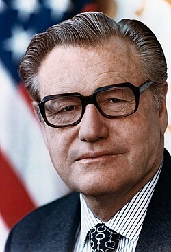 | Nelson Rockefeller1908–1979 | 20 Jan. 1969 – 20 Jan. 1977 | Republican Democratic-Republican | 1968 · House 1972 | Republican VP · name open Henry M. Jackson (working, 1973–77) |
| 38 | Pat Buchananborn 1938 | 20 Jan. 1977 – 20 Jan. 1985 | National Renewal post-1972 blue | 1976 · 1980 | Howard Phillips | |
| 39 | Ronald Reaganborn 1911 | 20 Jan. 1985 – 20 Jan. 1993 | Democratic-Republican | 1984, 1988 | Jack Kemp (working canon) | |
| 40 | Portrait pending | Thomas Harwoodincumbent in 1993 | 20 Jan. 1993 – open | National Renewal | 1992 | Nathaniel Reed Bell |
Divergence-era succession
Byrnes narrows the New Deal emergency state from inside the Democratic coalition. Dewey establishes the post-New-Deal Republican order and survives a close 1952 election before the Philippine War destroys its confidence. Warren is constitutionally selected by the House after the fractured election of 1956. Kennedy restores presidential mission politics and serves two complete terms; he is not assassinated.
Rockefeller wins two different kinds of mandate: contingent House selection in 1968 and a narrow Democratic–Republican fusion victory in 1972. Buchanan then brings National Renewal into the presidency for two terms. Reagan's 1984 victory and Buchanan's cooperation produce the first peaceful transfer between the new two-party system's rival governing movements.